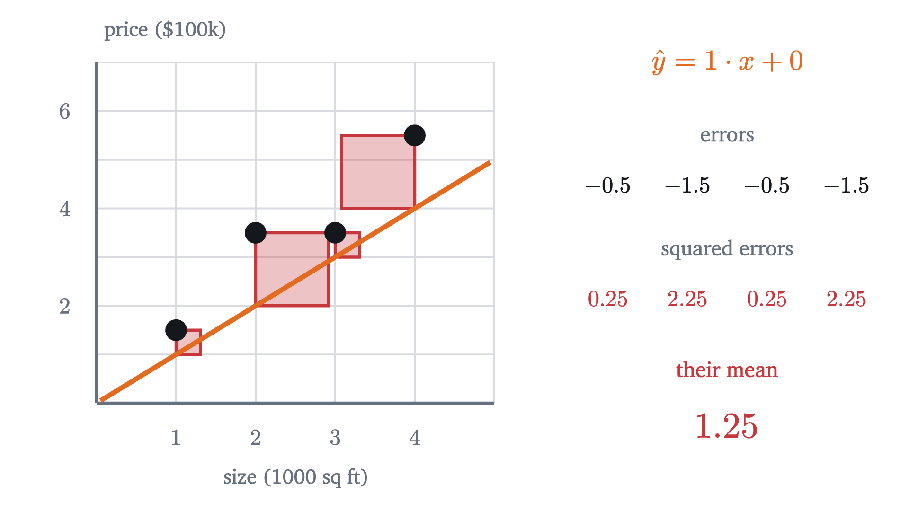
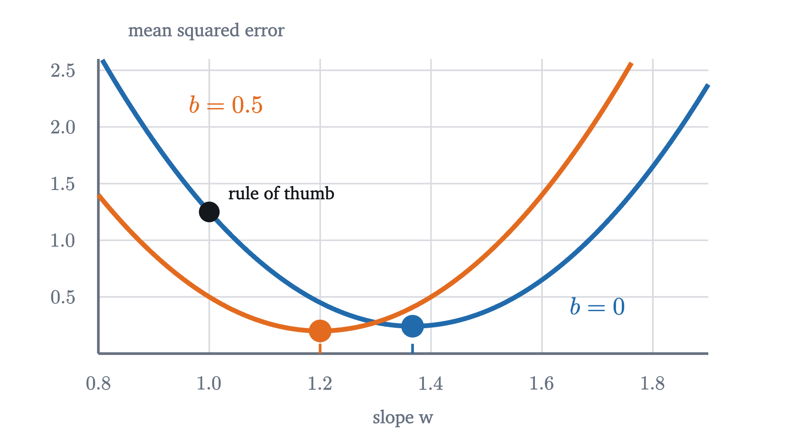
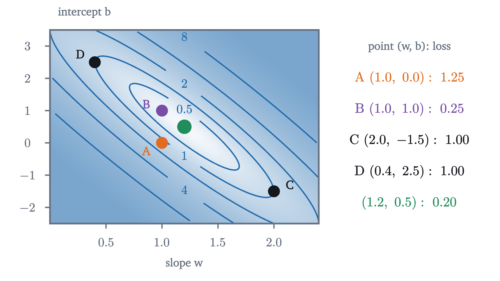
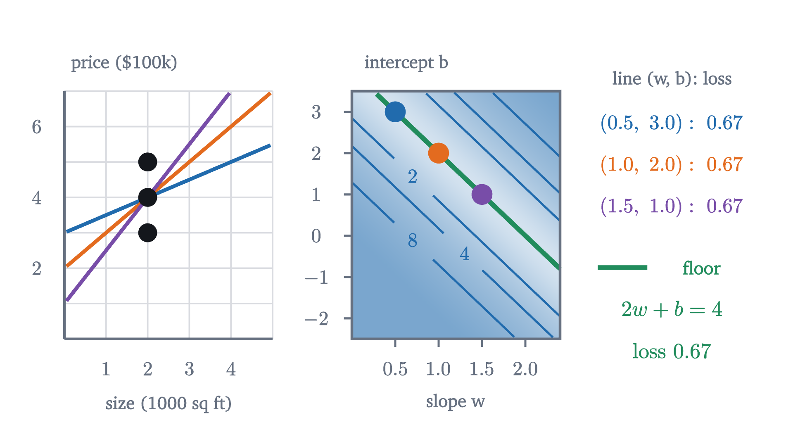

What "learning" means: fitting a line to data
A model is a formula with adjustable numbers, a loss scores its misses, and training lowers the loss. All three, worked by hand on four house prices.
AssumesCorrelation and the line of best fit, derivedWhat slope means, and why y = mx + b is a line
A house of 2500 square feet comes up for sale in a neighborhood where four houses have sold recently. What will it sell for?
| House | Size (thousands of sq ft) | Price (hundreds of thousands of $) |
|---|---|---|
| 1 | 1 | 1.5 |
| 2 | 2 | 3.5 |
| 3 | 3 | 3.5 |
| 4 | 4 | 5.5 |
No house of that size is in the table, so you cannot look the answer up. You would probably reason that bigger houses cost more and that 2500 square feet sits between houses 2 and 3, which both sold for $350,000, so something near that. That reasoning is a prediction rule, and it stops working once the table has forty houses and no two neighbors agree. Machine learning makes such rules explicit enough that a computer can find a good one. The phrase “learning from data” sounds mysterious, but for this problem every part of it can be written down and checked with a pencil.
A rule with two dials
The simplest rule that says “bigger costs more” is a straight line. Write $x$ for the size of a house in thousands of square feet and $\hat y$ (read “y hat”) for the predicted price in hundreds of thousands of dollars, and let
The two numbers $w$ and $b$ are not fixed yet. Think of them as dials. The dial $w$ is the slope: how much each extra thousand square feet adds to the price. The dial $b$ is the intercept, a baseline that shifts the whole line up or down. Every setting of the two dials is a different rule.
A common rule of thumb is “a hundred dollars per square foot”. A thousand square feet then costs $100,000, which in our units is $w = 1$ and $b = 0$: the rule $\hat y = x$. It predicts prices of $1, 2, 3, 4$ for the four houses. They actually sold for $1.5, 3.5, 3.5, 5.5$. The rule is too low every time, by $0.5, 1.5, 0.5$ and $1.5$.
Is that good or bad? Compared with what? We cannot improve a rule until we can say, in one number, how wrong it is.
Scoring the misses
For each house, call the prediction minus the actual price the error of the rule on that house:
For the rule of thumb the four errors are $-0.5, -1.5, -0.5, -1.5$. A natural first idea is to add them up, and it fails: a rule that is $100,000 too high on one house and $100,000 too low on another would score zero, the same as a rule that is exactly right on both. Misses in opposite directions must not cancel. The repair used throughout statistics, as in the lesson on the line of best fit, is to square each error first. Squares are never negative, so nothing cancels, and a miss twice as large counts four times as much. Then average, so that the score does not grow just because the table got longer.
For the rule of thumb the squared errors are $0.25, 2.25, 0.25, 2.25$, and their average is $5/4 = 1.25$.

Pause and try
Since the rule of thumb is too low on every house, raise the whole line by 1: keep $w = 1$ and set $b = 1$. Compute the four errors and the mean of their squares.
Show answerHide answer
The predictions are $2, 3, 4, 5$, and the errors are $2 - 1.5 = 0.5$, $3 - 3.5 = -0.5$, $4 - 3.5 = 0.5$, $5 - 5.5 = -0.5$. Every squared error is $0.25$, so the mean is $0.25$. One turn of one dial cut the score from $1.25$ to a fifth of that.
We now have the three objects that every problem of this kind is made of, and they have standard names.
Read this against what we did. The model is the rule with its dials, and the parameters are the dials. The loss is the score, and note what its inputs are: the data are fixed, so $L$ is a function of $w$ and $b$ alone. We found $L(1, 0) = 1.25$ and $L(1, 1) = 0.25$. Training is the dial-turning, and the definition says nothing yet about how to do it. The word “learning” in machine learning refers to this search.
Turning one dial
The most cautious way to search is to leave $b = 0$ and turn only the slope. With $b = 0$ the four errors are $w - 1.5$, $2w - 3.5$, $3w - 3.5$ and $4w - 5.5$. Their squares add up to $(1 + 4 + 9 + 16)\,w^2 - (3 + 14 + 21 + 44)\,w + (2.25 + 12.25 + 12.25 + 30.25) = 30w^2 - 82w + 57$, and dividing by 4,
This is a quadratic in $w$ with a positive leading coefficient, so its graph is a parabola opening upward, and completing the square locates its lowest point: $L(w, 0) = 7.5\,(w - \tfrac{41}{30})^2 + \tfrac{29}{120}$. With the intercept held at zero, the best slope is $41/30 \approx 1.37$, where the loss is $29/120 \approx 0.242$.
Pause and try
Two lines now score about the same: $w = 1, b = 1$ scores $0.25$ and $w \approx 1.37, b = 0$ scores $0.242$. Try the line halfway between in both dials, roughly $w = 1.2$, $b = 0.5$. Does it beat both?
Show answerHide answer
Its predictions are $1.7, 2.9, 4.1, 5.3$, with errors $0.2, -0.6, 0.6, -0.2$ and a loss of $(0.04 + 0.36 + 0.36 + 0.04)/4 = 0.2$. It beats both. One line got close by lifting, the other by tilting, and doing some of each is better than either.
That exercise shows what is wrong with turning one dial. Repeat the calculation with the intercept held at $0.5$ instead of $0$ and you get a different parabola, $L(w, 0.5) = 7.5\,(w - 1.2)^2 + 0.2$, whose lowest point is at a different slope.

So the loss cannot be understood one dial at a time. It is a function of two variables, and to see it whole we need a picture with both dials in it.
The loss surface
Expand the mean squared error without fixing either dial. Each squared error $(wx_i + b - y_i)^2$ multiplies out to $x_i^2w^2 + 2x_iwb + b^2 - 2x_iy_iw - 2y_ib + y_i^2$, and averaging over the four houses replaces each coefficient by an average over the data: the mean of $x_i^2$ is $7.5$, of $x_i$ is $2.5$, of $x_iy_i$ is $10.25$, of $y_i$ is $3.5$ and of $y_i^2$ is $14.25$. Therefore
Check it against what we know: $L(1, 0) = 7.5 - 20.5 + 14.25 = 1.25$, and $L(1, 1) = 7.5 + 5 + 1 - 20.5 - 7 + 14.25 = 0.25$.
A function of two variables can be drawn as a map. Put $w$ on the horizontal axis and $b$ on the vertical one, so that each point of the plane is one setting of the dials, which is to say one line. Shade each point by the loss there, and draw curves through points of equal loss, the way a hiking map draws curves through points of equal height.

The curves of equal loss are ellipses, one inside the next, all centered on the same point. They are long and thin, and they lie along a diagonal. That shape says something concrete about the data. Moving along the diagonal means raising the slope while lowering the intercept, which pivots the line about the middle of the data and changes its predictions there very little. Moving across the diagonal lifts the whole line off the data. The loss is forgiving in the first direction and strict in the second.
Pause and try
The figure claims that points C and D have the same loss. Check it. C is the line $\hat y = 2x - 1.5$ and D is the line $\hat y = 0.4x + 2.5$.
Show answerHide answer
For C the predictions are $0.5, 2.5, 4.5, 6.5$ and the errors are $-1, -1, 1, 1$, so the loss is $1$. For D the predictions are $2.9, 3.3, 3.7, 4.1$ and the errors are $1.4, -0.2, 0.2, -1.4$, so the loss is $(1.96 + 0.04 + 0.04 + 1.96)/4 = 1$. One line is five times as steep as the other, and its intercept compensates.
In the next figure a point wanders over the map on the right while the line it stands for moves on the left.
Take the loss as height. Closed curves nested around a single low point are then the contour lines of a basin. The loss surface of the four houses is a long bowl, and the green dot is its bottom.
Training now has a geometric meaning: find the bottom of the bowl. But a picture is not a proof. Is there always exactly one lowest point, or could some data set produce two pits, or a pit hidden outside the window we plotted? And where is the bottom?
Why the surface is a bowl
For our four houses, completing the square answers both questions at once. Group the terms of $L$ that contain $b$: $b^2 + 5wb - 7b = b^2 + 2b\,(2.5w - 3.5)$, which is $(b + 2.5w - 3.5)^2$ minus $(2.5w - 3.5)^2$. Subtracting $(2.5w - 3.5)^2 = 6.25w^2 - 17.5w + 12.25$ from the remaining terms $7.5w^2 - 20.5w + 14.25$ leaves $1.25w^2 - 3w + 2 = 1.25\,(w - 1.2)^2 + 0.2$. So
This is two squares plus a constant, and neither square can be negative, so $L \ge 0.2$ everywhere on the plane, with no window to worry about. Both squares vanish only when $w = 1.2$ and $b = 3.5 - 2.5 \times 1.2 = 0.5$. That is the single lowest point, and no other setting of the dials ties it.
The same computation works for any data. For data $(x_i, y_i)$ write $\bar x$ and $\bar y$ for the means, and
We also need the precise word for “bowl-shaped”.
The point $(1 - s)p + sq$ runs along the segment from $p$ to $q$ as $s$ goes from 0 to 1, and the right side is the height of the straight chord joining the surface above $p$ to the surface above $q$. So convexity says that between any two points the surface sags below the chord. A surface with two pits fails this, because the chord from one pit to the other passes under the ridge between them.
Part 3 has a visual meaning: cut the bowl along any straight line whatever, and the cross-section is a parabola that opens upward. The number $A$ is how sharply it curves.
Where the bottom is
Part 2 of the theorem is a formula for the trained model. For the houses, $\bar x = 2.5$ and $\bar y = 3.5$; the deviations are $u = (-1.5, -0.5, 0.5, 1.5)$ and $v = (-2, 0, 0, 2)$; so $S_{xx} = 5$ and $S_{xy} = 3 + 0 + 0 + 3 = 6$. Hence
and with $S_{yy} = 8$ the minimum loss is $\frac14(8 - 36/5) = 0.2$, agreeing with the direct calculation. This is the least-squares line of statistics: the lesson on correlation and regression derives the same slope $S_{xy}/S_{xx}$ and intercept $\bar y - w^*\bar x$ by minimizing the sum of squared errors, which is $n$ times our mean and so has its minimum at the same place.
Pause and try
Use the trained model to answer the opening question: what does it predict for the house of 2500 square feet? And what price does it predict for 5000 square feet?
Show answerHide answer
In our units the size is $x = 2.5$, so $\hat y = 1.2 \times 2.5 + 0.5 = 3.5$, or $350,000. This is the mean price because $2.5$ is the mean size, and the best line always passes through $(\bar x, \bar y)$, since $b^* = \bar y - w^*\bar x$. For $x = 5$ the model says $6.5$, or $650,000. That prediction is an extrapolation beyond every house in the table, and nothing in the training guarantees that the straight-line pattern continues out there.
You might object that if a formula gives the answer, there is nothing left to train. But the formula belongs to this model and this loss. It exists because $L$ is quadratic in the parameters, and $L$ is quadratic because the model is linear in them and the loss squares the errors. Change either one, as we will when the model must output a probability or contains several layers, and no formula for the bottom is available. The picture survives: there is still a loss surface over the parameters, and training still means going downhill on it. Gradient descent, the subject of the next lesson, finds the bottom using only the local slope, and it will be tested first on this bowl, where we know the right answer.
Worked examples
When the bowl has no single bottom
The theorem assumed that the inputs are not all equal. Here is what happens without that. Suppose three houses of the same size, 2000 square feet, sold for $3$, $4$ and $5$. Every error is $2w + b - y_i$, which depends on the dials only through the combination $2w + b$, and
The loss is as small as possible, $2/3$, at every point of the line $2w + b = 4$. The surface is a trough with a flat floor, and infinitely many lines tie for best: every line through the point $(2, 4)$. The data say what a 2000 square foot house costs on average and nothing about how price changes with size. The surface is still convex, but not strictly: along the floor of the trough, the chord lies in the surface.

The long thin valley on the map of the four real houses is a mild form of the same thing. Their sizes, 1 to 4, are all on one side of zero, so raising the intercept and lowering the slope nearly compensate. The valley will matter in the next lesson, because a method that feels its way downhill moves slowly along a nearly flat floor.
Stepping back
The hard step was a change in what we looked at. We started in the data plane, where the houses are points and the model is a line. The work happened in the plane of the parameters, where each line is a point and the data have been absorbed into a single function $L$. There, “which line is best?” becomes “where is this surface lowest?”, and for the linear model with squared error the surface is a convex bowl whose bottom has a formula.
Later lessons keep that structure and change its parts: a different model, a different loss, more parameters. The surface stops being a bowl and the formula disappears, but model, loss and training keep their meanings.
Check yourself
For the four houses, $L(1, 1) = 0.25$ and the minimum of the loss is $L(1.2, 0.5) = 0.2$. Which statement is correct?
Problems
The first three repeat the lesson’s computations. The next two ask you to explain or combine. The last one extends the lesson.
Problem 1
For the four houses, compute the mean squared error of the line $\hat y = 1.5x$ directly from the errors, and then again from the formula $L(w, b) = 7.5w^2 + 5wb + b^2 - 20.5w - 7b + 14.25$.
Show solutionHide solution
The predictions are $1.5, 3, 4.5, 6$ and the errors are $0, -0.5, 1, 0.5$. The squares are $0, 0.25, 1, 0.25$ with mean $1.5/4 = 0.375$. From the formula with $w = 1.5$, $b = 0$: $7.5 \times 2.25 - 20.5 \times 1.5 + 14.25 = 16.875 - 30.75 + 14.25 = 0.375$.
Problem 2
For the data $(1, 1), (2, 3), (3, 2)$, write $L(w, b)$ in expanded form, find the best line, and find the minimum loss.
Show solutionHide solution
The averages are: $x^2$: $14/3$; $x$: $2$; $xy$: $(1 + 6 + 6)/3 = 13/3$; $y$: $2$; $y^2$: $14/3$. So $L = \frac{14}{3}w^2 + 4wb + b^2 - \frac{26}{3}w - 4b + \frac{14}{3}$. For the minimum, $u = (-1, 0, 1)$ and $v = (-1, 1, 0)$, so $S_{xx} = 2$, $S_{xy} = 1$, $S_{yy} = 2$. Then $w^* = 0.5$, $b^* = 2 - 0.5 \times 2 = 1$, and the minimum loss is $\frac13(2 - \frac12) = 0.5$. Check: $\hat y = 0.5x + 1$ predicts $1.5, 2, 2.5$, with errors $0.5, -1, 0.5$ and mean square $(0.25 + 1 + 0.25)/3 = 0.5$.
Problem 3
Using $L(w, b) = (b + 2.5w - 3.5)^2 + 1.25(w - 1.2)^2 + 0.2$ for the houses: (a) recompute $L(1, 1)$. (b) Find every point on the valley floor $b = 3.5 - 2.5w$ whose loss is at most $0.25$. (c) What do those lines have in common on the data plot?
Show solutionHide solution
(a) $(1 + 2.5 - 3.5)^2 + 1.25 \times 0.04 + 0.2 = 0 + 0.05 + 0.2 = 0.25$. (b) On the valley floor the first square is zero, so the loss is $1.25(w - 1.2)^2 + 0.2 \le 0.25$, which gives $(w - 1.2)^2 \le 0.04$, that is $1 \le w \le 1.4$, with $b = 3.5 - 2.5w$ running from $1$ down to $0$. (c) The condition $b = 3.5 - 2.5w$ says $w \times 2.5 + b = 3.5$: each of these lines passes through the point of means $(2.5, 3.5)$. They are the lines through that point with slopes between 1 and 1.4. Point B of the lesson, $(1, 1)$, is one end of this range.
Problem 4
Let $e_i = w^*x_i + b^* - y_i$ be the errors of the best line. Show that $\sum e_i = 0$ and $\sum e_ix_i = 0$ for any data with the $x_i$ not all equal, and verify both for the houses.
Show solutionHide solution
In the notation of the proof, $e_i = (w^*u_i - v_i) + c$ with $c = b^* + w^*\bar x - \bar y = 0$. So $\sum e_i = w^*\sum u_i - \sum v_i = 0$. Next, $\sum e_ix_i = \sum e_i(u_i + \bar x) = \sum e_iu_i + \bar x\sum e_i = \sum (w^*u_i - v_i)u_i + 0 = w^*S_{xx} - S_{xy} = 0$, because $w^* = S_{xy}/S_{xx}$. For the houses the errors are $0.2, -0.6, 0.6, -0.2$: their sum is $0$, and $\sum e_ix_i = 0.2 - 1.2 + 1.8 - 0.8 = 0$. (With calculus: these two sums are, up to the factor $2/n$, the partial derivatives of $L$ with respect to $b$ and $w$, which vanish at the bottom of the bowl.)
Problem 5
A typing error records the price of house 4 as $9.5$ instead of $5.5$. Find the best line for the corrupted data and its prediction for the 2500 square foot house. Why does one bad entry move the line so much?
Show solutionHide solution
Now $\bar y = (1.5 + 3.5 + 3.5 + 9.5)/4 = 4.5$ and $v = (-3, -1, -1, 5)$, with $u = (-1.5, -0.5, 0.5, 1.5)$ as before. $S_{xy} = 4.5 + 0.5 - 0.5 + 7.5 = 12$ and $S_{xx} = 5$, so $w^* = 2.4$ and $b^* = 4.5 - 2.4 \times 2.5 = -1.5$. The slope has doubled. The prediction at $x = 2.5$ is $2.4 \times 2.5 - 1.5 = 4.5$, a full $100,000 above the earlier $350,000. Two things make the entry so influential. The loss squares errors, so the old line’s error of $-4.2$ on the bad point would contribute $17.64$ to the sum, far more than all other errors together, and the minimizer gives up accuracy on three houses to shrink that one term. And house 4 is at the end of the range of sizes, where pulling on the line tilts it most.
Problem 6
(Turning one dial at a time.) Start at the rule of thumb $(w, b) = (1, 0)$ and alternate two moves: (i) with $b$ fixed, set $w$ to the value that minimizes $L$; (ii) with $w$ fixed, set $b$ to the value that minimizes $L$. For the houses, find formulas for both moves, carry out two rounds, and prove that the slope converges to $1.2$.
Show solutionHide solution
Collect $L$ as a quadratic in $w$: $7.5w^2 + (5b - 20.5)w + \dots$, minimized at $w = (20.5 - 5b)/15$. As a quadratic in $b$: $b^2 + (5w - 7)b + \dots$, minimized at $b = (7 - 5w)/2 = 3.5 - 2.5w$. Round 1: $w = 20.5/15 \approx 1.3667$, then $b = 3.5 - 2.5 \times 1.3667 \approx 0.0833$; the loss is now about $0.2347$. Round 2: $w = (20.5 - 0.4167)/15 \approx 1.3389$, then $b \approx 0.1528$; the loss is about $0.2241$. For the proof, note that after move (ii) the point satisfies $b = 3.5 - 2.5w$. Substituting this into move (i) shows that each later round sends the slope $w$ to
So $w' - 1.2 = \frac56(w - 1.2)$: each round after the first multiplies the distance of the slope from $1.2$ by $5/6$. After round 1 that distance is $41/30 - 1.2 = \frac16$, so after $k$ rounds it is $\frac16(5/6)^{k-1}$, which tends to 0, and then $b = 3.5 - 2.5w$ tends to $0.5$. The method works, but slowly: it needs about 13 rounds to cut the distance by a factor of ten, since $(5/6)^{13} \approx 0.093$. Solving exactly for one block of unknowns at a time is also how k-means finds clusters.